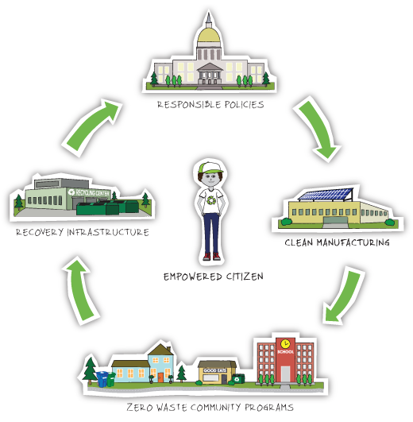

A Zero Waste System is cyclical, like in nature, and does two fundamental things: It redesigns our systems and resource use from product design to disposal to prevent wasteful and polluting practices that lead to those 87 cans of waste. It then captures discards and uses them, instead of natural resources, to make new products, creating far less pollution and feeding the local economy.
New rules and policies that take a responsible approach to using and conserving dwindling natural resources. New manufacturing processes and smarter design where manufacturers are held responsible for the full lifecycle of their products, giving them the incentive to design for the environment, NOT the dump. New programs in every sector of our society to shift our culture away from wasting and toward a sense of responsibility for our planet and its future. Resource recovery infrastructure to replace landfills and incinerators and recover 90% or more of our discards. Empowered citizens like you who now live in a system that supports your efforts, while you continue to call for Zero Waste progress in your community.